Caretaker Prime
A cel-shaded creature garden: raise a few memorable creatures on an overgrown island that keeps living while the game is closed. Think Chao Garden care, Stardew restoration and Animal Crossing coziness.
Built in Unreal Engine 5.8 on a Mac by a team of AI agents directed by one person, with every art and sound asset generated on fal. This page documents how, including what didn't work.
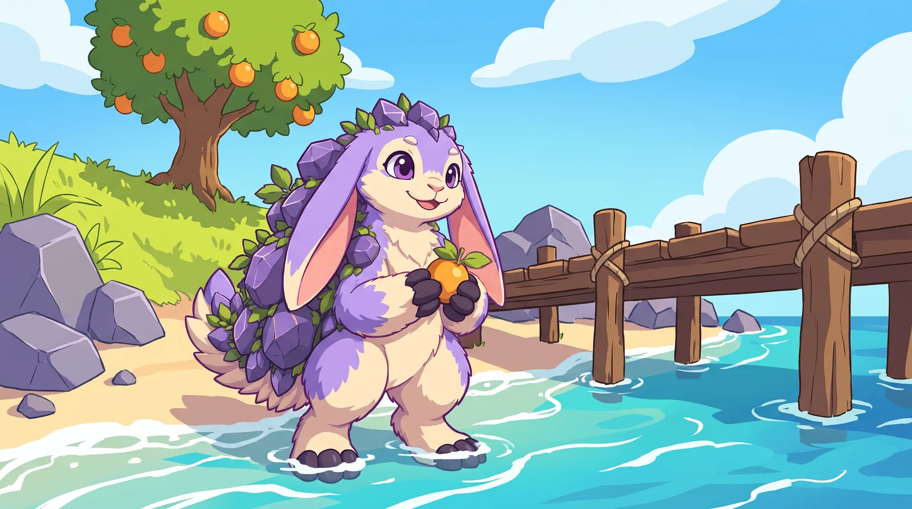
In the engine now
Unreal Engine 5.8 · greybox, not final art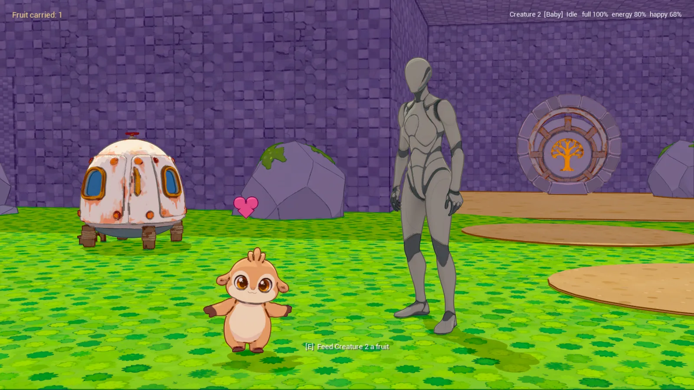
Playable starter island
playableWalk the island, pick fruit, hand-feed and pet the baby. The baby's behaviour comes from the simulation: it reads the sim's intent (wander, seek food, sleep, approach you) and acts it out on the navmesh, with a small emotion symbol overhead. The caretaker is still the template mannequin.
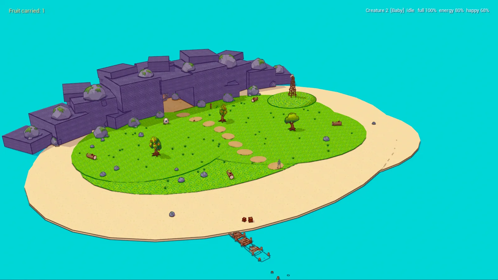
The greybox island
About 80 by 60 m: grass, sand, a dirt path, the cave cliff (still cubes), the incubator, three fruit trees and a broken pier.
The sim runs inside Unreal
- Loads the save (with a backup), then catches up on the time you were away.
- Keeps a “While you were away” recap of what mattered.
- Steps every 60 real seconds, from the wall clock, not the frame rate.
- Autosaves every 5 minutes and on quit.
- 11 of 11 Unreal automation tests (5 sim-in-engine, 6 gameplay), plus the 17 sim tests.
What the game is
design direction, not a feature listYou are the newly appointed Caretaker Prime of a neglected island sector. The previous caretaker is gone, the facilities are failing and the islands are overgrown. A caretaker from another sector helps over a patchy video link, but doesn't know your islands. A storm hit the sector some time ago, and you piece the rest together as you go.
You raise a small number of creatures, around 15 at most on the first real island. Genes, food, care, friendships, rivalries and how you treat them shape who each one becomes. The world runs on the real clock, including while the game is closed, and there is no game over from neglect. The goal is one companion with a personal history, not a collection.
Oddly alive
Creatures approach, choose, remember, teach, misbehave and make up, within rules you can read.
Agency with consequences
Praise, scold, feed, relocate. Context, trust, memory and who was watching change the outcome.
Time and continuity
Real clock and seasons, elderhood, reincarnation, descendants and a family album spanning years.
Restoration as play
Clear grass and rocks, find notes, repair hardware, plant trees, bring abandoned islands back.
A clean world view
Little HUD. Faces, behaviour and small emotion symbols carry the state; a phone holds the detail.
Systems first
The simulation is deterministic and saveable. AI helps make assets; it never decides what a creature does.
The return loop
The first milestone we test against: after about a week of real time, do two creatures from staggered eggs feel different and produce stories you remember?
Art direction
cozy anime cel-shading, from an 8-page style guideRules every render is checked against
- Coloured contours. Lines are a darker shade of the fill they surround, never pure black.
- Flat fills, hard shadows. A base colour plus two or three hard-edged shadow steps. No gradients inside fills.
- Sunny light. Coastal sun from the upper left, a faint warm rim light, faces always lit.
- Hue-shifted shadows. Shadows go cooler and violet, not just darker grey.
- Chunky shapes. Rounded, readable silhouettes at gameplay distance. No spindly parts on babies.
- No texture noise. No fur strands, grain or bump noise. Fur is implied by silhouette tufts.
- One body plan. Every creature shares a biped rig: head, torso, two arms with usable hands, two legs.
Palette
Sampled from the style guide. These are the game's colours; this page stays monochrome so the art carries them.
Style anchors
test renders that prove the look reproduces before any real asset is made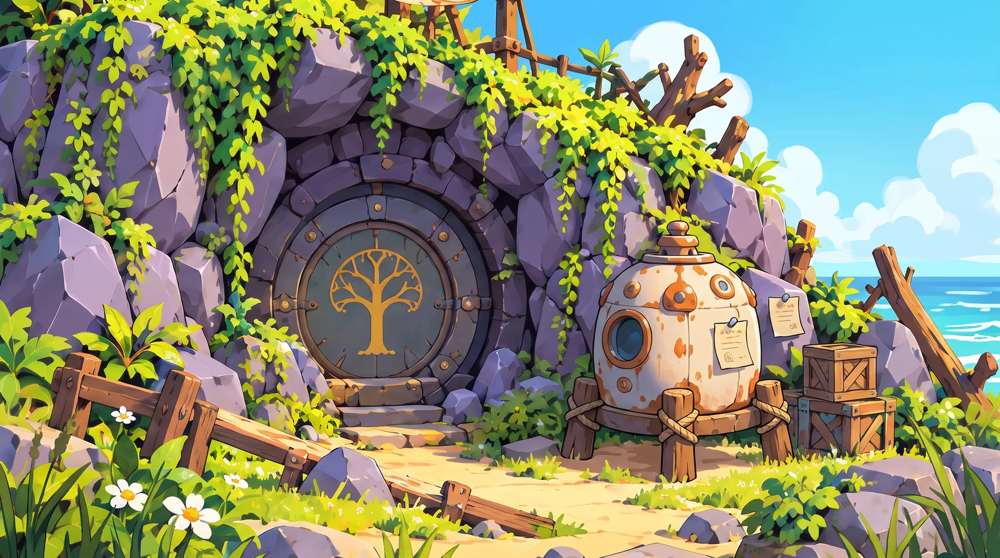
Nursery cave
Cave, locked vault door and incubator in one frame.
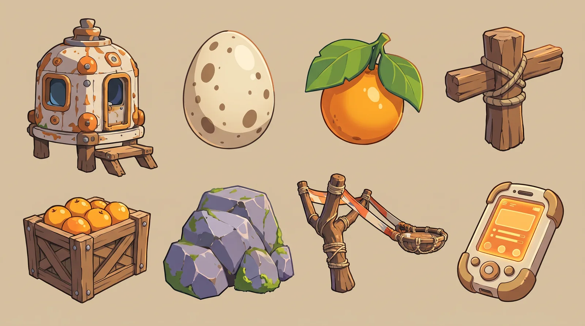
Prop sheet
Rope, timber, faceted stone and rusty-cute company hardware.
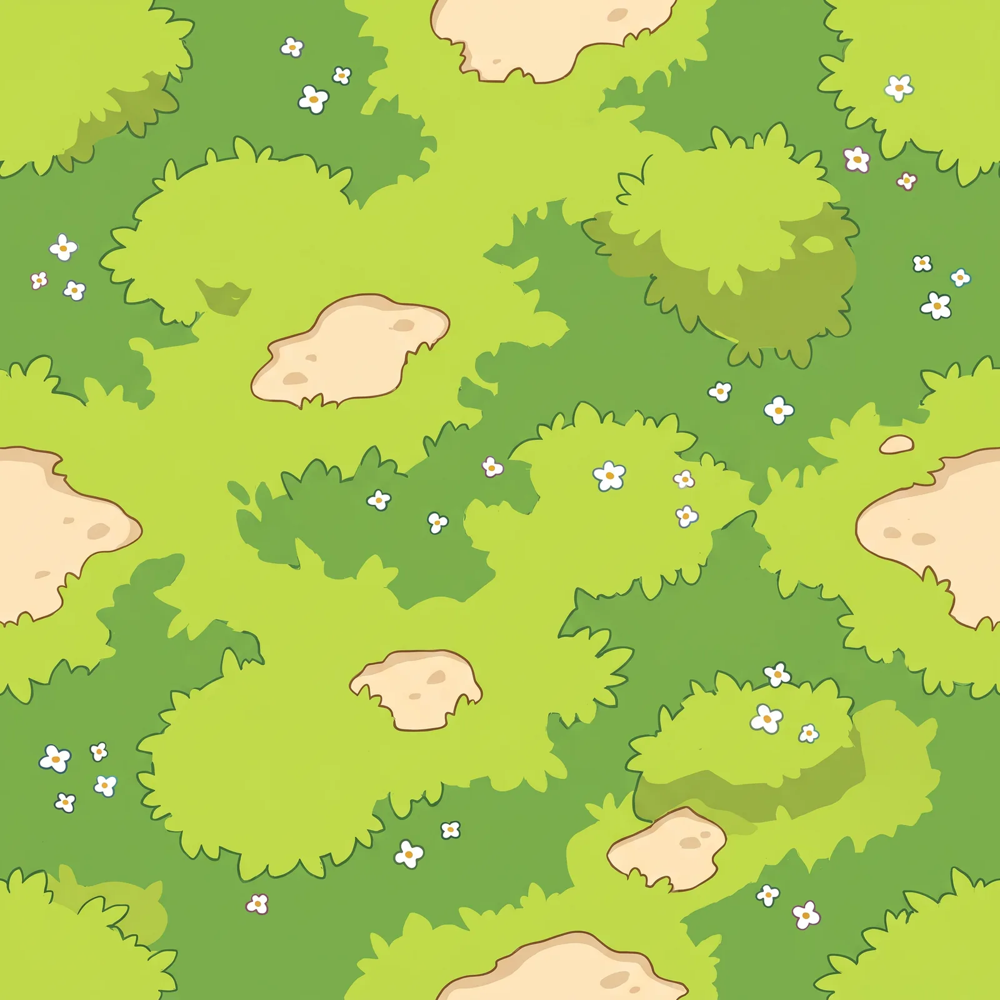
Ground tile
Seam error at the wrap edges came out close to the interior baseline, so it tiles.
The look in Unreal
one post-process material for the whole gameHow the cel-shading works
- Three tone bands. The light each pixel receives is split into lit, mid and dark, then multiplied back onto the flat base colour. Shadows lean violet.
- Coloured outlines. Drawn from depth, normal and stencil edges, on the nearer surface only, and coloured from the local fill instead of black.
- Warm rim light on characters. Characters are marked in the stencil buffer, which also keeps their faces out of the darkest band.
- Painted sky. An azure gradient with two-tone blob clouds.
- Off: Lumen, bloom, ambient occlusion, auto exposure. Fixed exposure keeps the bands predictable.
“like the cell shading”
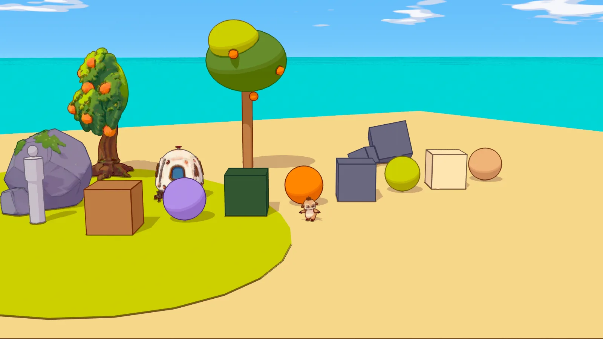
Look-dev scene
Imported props, the baby and palette swatches, re-shot after every change to the look.
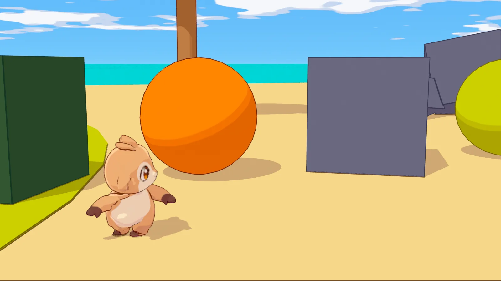
The baby under the look
In engine, with the character rim light and coloured outlines. Faces are kept out of the darkest band.
How we build it
one person, one orchestrator, many agentsKenneth
Direction, taste, and every approval gate
Orchestrator · Claude Opus 5.5
Plans, dispatches, then re-runs every acceptance check itself
Planning & art direction
- Plan and architecture
- Art bible and prompt blocks
- Concepts, picks with written reasons
Engine code
- C++20 simulation core
- Save schema and migrations
- CMake + ctest loop
3D pipeline
- fal generation scripts
- Headless Blender checks and fixes
- FBX export for Unreal
Mechanical work
- Repo bootstrap, git LFS
- Commits and pushes
- Engine install checks
Systems first, AI for assets only
Creature behaviour, needs, time and saves are ordinary deterministic C++ with tests. No model call decides game state, and the game never needs a network call to run. fal generates the art, meshes, textures and sounds during development; those become normal files in the project.
Humans at the gates
Agents propose and check; Kenneth decides. The creature design was a hard stop: nothing went to 3D until he picked one. Every generated asset carries a manifest with the endpoint, prompt, references, file hashes, and an flag that only flips on his explicit decision, stored with his words.
The fal asset pipeline
every endpoint checked live before useCreatures
Props
Textures and sound
| Job | fal endpoint |
|---|---|
| Concepts, turnarounds | fal-ai/nano-banana-pro/edit |
| Creature mesh | fal-ai/meshy/v7.1/multi-image-to-3d |
| Rig + animation set | fal-ai/meshy/rigging/multi-animation |
| Prop meshes | meshy/v7.1/image-to-3d |
| Tiling albedo (all 5) | fal-ai/z-image/turbo/tiling |
| Tiling albedo (tried, stalled) | ideogram/v4/tiling |
| Normal maps | fal-ai/patina |
| Sound effects | fal-ai/elevenlabs/sound-effects/v2 |
| Ambience loop | mirelo-ai/sfx1.6/text-to-audio |
Ground textures, tiled 2x2
5 of 5 doneTiling a texture 2x2 makes seams obvious. Ideogram tiling kept stalling, so all five came from z-image turbo tiling, with patina normal maps.
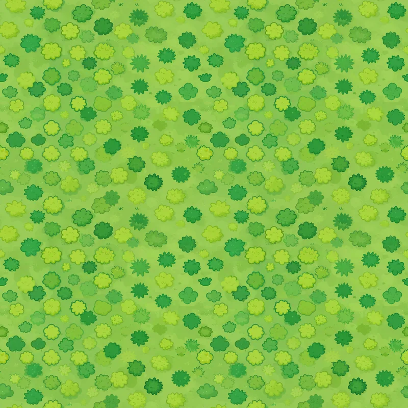
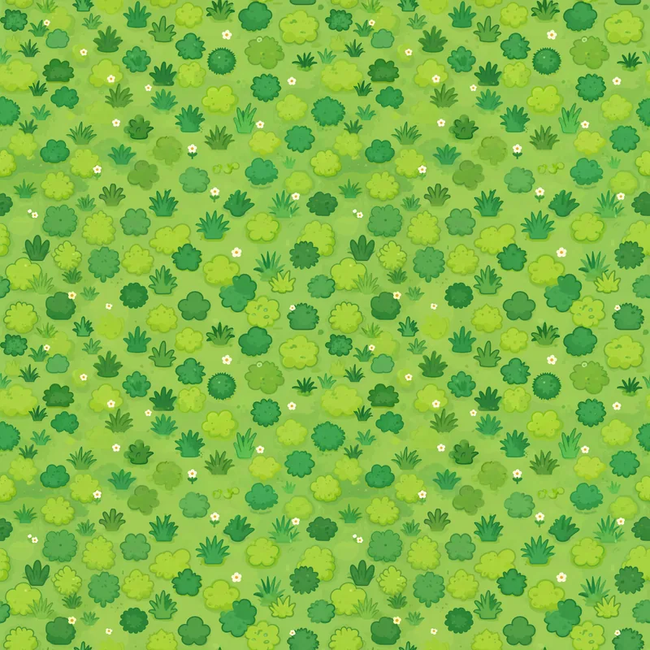
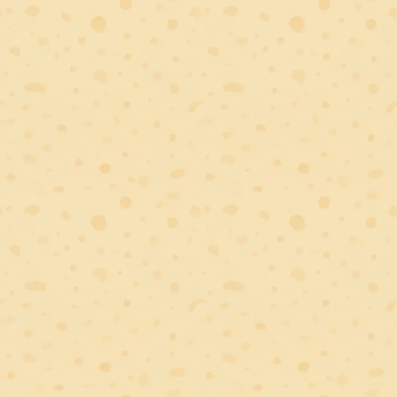
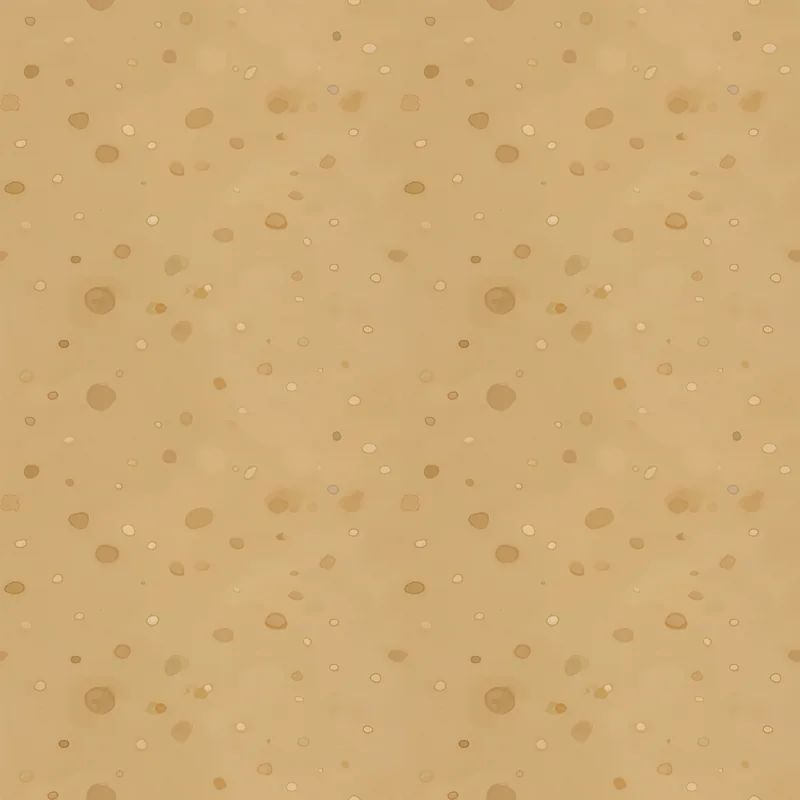
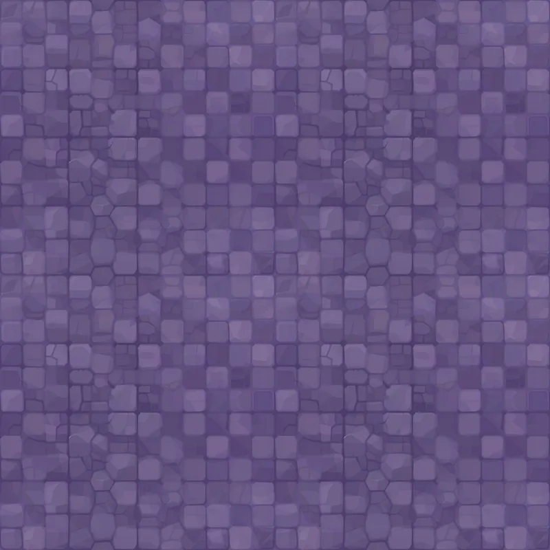
Starter sound set
Footsteps on grass, grass pull, pickup whoosh, fruit crunch, egg crack, hatch chime, happy chirp, hungry whine, phone ping, and a looping island ambience: 15 files, since some sounds have variants. All are imported into Unreal; pickup, crunch, chirp and whine already play in the greybox.
The creature
one neutral baby that every lineage grows fromThe first baby has to be archetype-neutral: tan and cream, no leaves, fins, feathers or crystals. What it grows into comes from genes and care. The art agent drew four candidates, each with a hero render and a turnaround for 3D. Then the build paused for a human pick.
“for creatures let go with C”
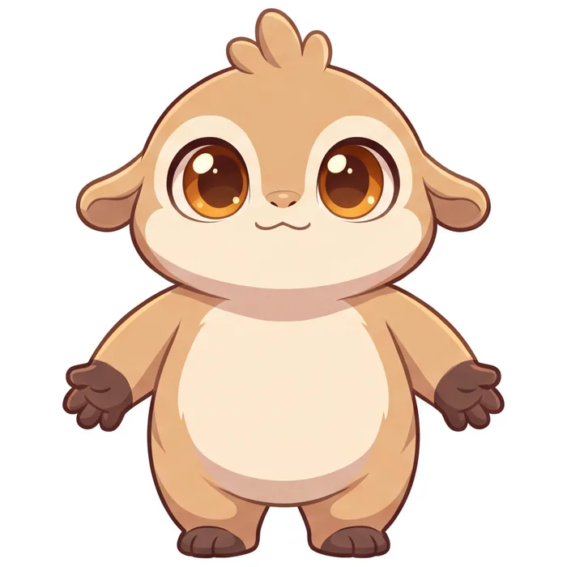
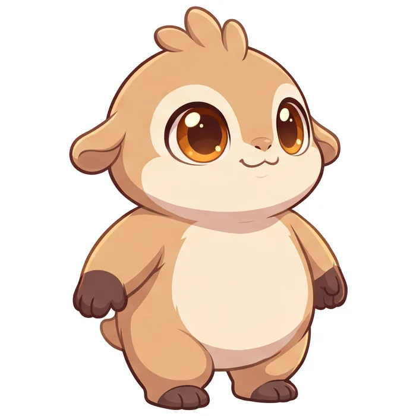
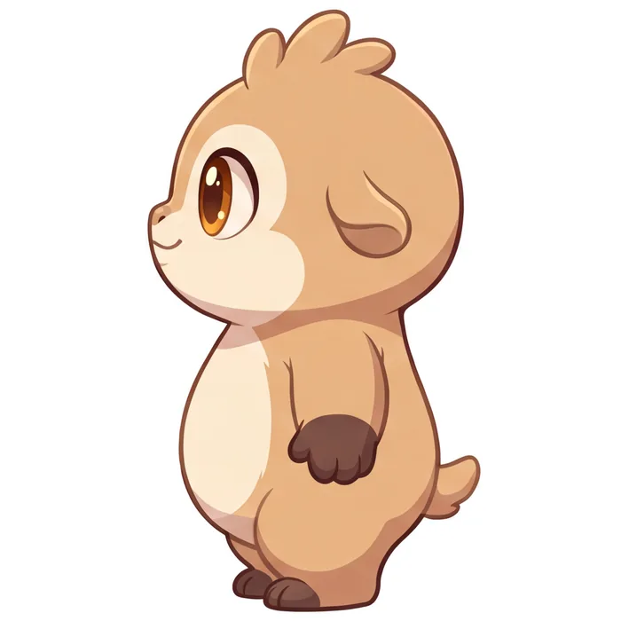
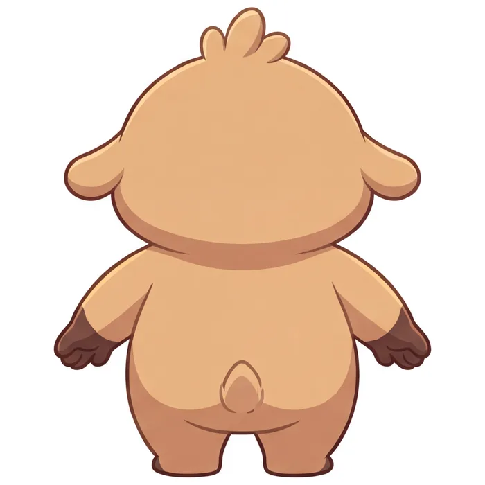
Dumpling turnaround
The four A-pose views fed to Meshy's multi-image-to-3D. Consistency across views matters more than any single drawing.
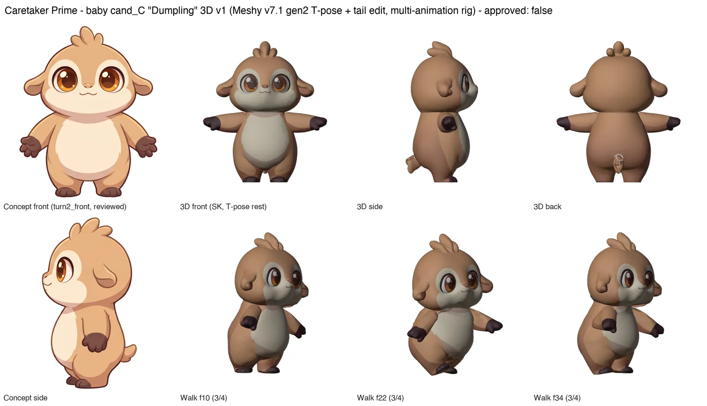
3D v1: Meshy 7.1, 24-bone rig, 12 clips
rejectedConcept on the left, the rigged mesh and walk-cycle frames on the right. The shape came through well. The colour reads browner and greyer than the concept because Meshy bakes shading into the texture.
An honest note on v1, and what v2 fixed
The v1 skin weights from the auto-rig deformed badly, and Kenneth rejected it: the head deformed as it turned and the arms warped the body. Measuring it confirmed him. Head and neck influence was spread across the face, arm bones pulled on the belly, and several joints sat outside the mesh; one knee was above the hip.
v2 re-placed the joints inside the body and re-skinned the mesh by region: a rigid head, with narrow blend bands at the neck, armpits and hips. Bone orientations are unchanged, so the same 12 clips still apply. Measured head distortion went from up to 270 mm to 0, and belly leak on the wave clip from 33 mm to 0. The texture was colour-matched to the concept.
One more bug surfaced in Unreal: with any animation applied, the baby rendered about 1 cm tall. The animation files carried their metre-to-centimetre scale differently from the mesh. Importing the animations at x100 on the root bone fixed it. Still to do: the generic clips don't suit a round body (the wave is hidden, the belly creases, the feet dip), so custom clips are next.
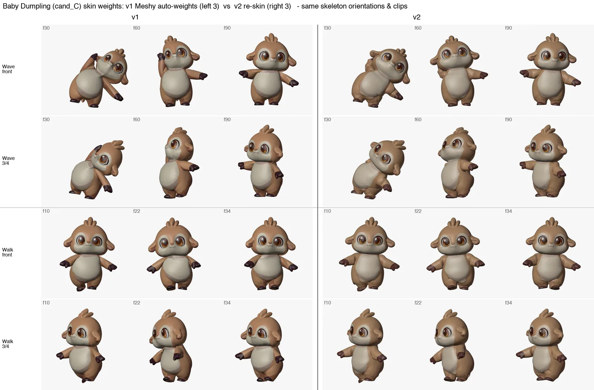
Weights: v1 (left) vs v2 (right)
v2 doneSame skeleton, same clips. Watch the head and belly in the wave frames. Full sheet with all four clips.

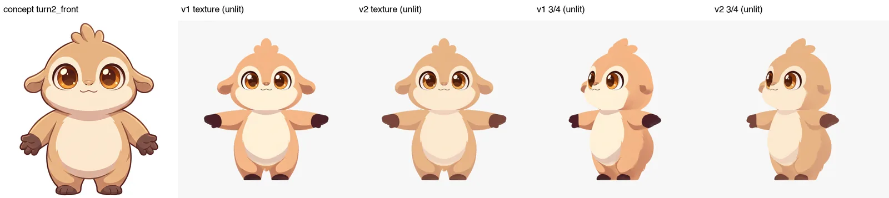
Texture: concept, v1, v2
v2 donev2 pulls the tan and cream back toward the concept and flattens the baked shading, so the toon shader can do the shading.
Prop kit
concept vs Meshy 3D render, 13 propsSimulation core
CaretakerSim · C++20 · no engine headersDeterministic
All state is integers: needs and stats in fixed-point hundredths, times in Unix seconds. No floating-point values are saved. Randomness is a hash of world seed, subsystem, entity, tick and draw number, so one creature's luck can't shift another's, and a replay with the same seed gives the same bytes.
Offline catch-up
The world ticks every 60 seconds. When you come back, the first 24 hours away are replayed minute by minute; after that it steps hourly, with harm damped the longer you were gone. Catch-up is capped at 60 days. Moving the clock backwards changes nothing. Vacation mode slows ageing and holds needs above a floor.
| Test | What it proves |
|---|
First playtest
what Kenneth flagged, 2026-09-28| Flag | What we're doing | Status |
|---|
Engine setup lessons
UE 5.8 on a Mac, things that cost us time1 · The Epic launcher's App Translocation loop
macOS runs quarantined apps from a randomized, read-only location (App Translocation). The launcher tried to update itself there, couldn't, and restarted into the same update. Clearing the quarantine attribute let it run from and finish updating.
xattr -dr com.apple.quarantine "/Applications/Epic Games Launcher.app"
2 · Xcode 26+ ships without the Metal compiler
Since Xcode 26 the Metal toolchain is a separate download. Without it, shader compiles fail with . One-time fix per machine:
xcodebuild -downloadComponent MetalToolchain xcrun metal --version
3 · UE 5.8 has an MCP plugin
Unreal 5.8 includes Epic's experimental plugin, which lets agents talk to the editor. It's enabled in the project (editor only), next to the Python scripting plugin, and we verified it answers (HTTP on port 8000 by default). Most editor automation still runs as headless Python. This UE version's SDK config also accepts Xcode 27, so C++ builds work on a current toolchain.
4 · Renaming the template project
UE 5.8 ignored when we renamed the ThirdPerson template's packages and classes. entries worked. Copying also misses the shared template packs (Characters, Input, LevelPrototyping), so the mannequin and input assets had to be added by hand.
5 · Headless test runs that silently skip the tests
quits before the tests run. Use so the editor exits when the test queue is done, and check the test count in the log.
6 · A game window that never appears
Launching through the binary plays sound but shows no window on macOS. The launcher now starts the game through .
7 · Network outages mid-generation
Two DNS outages killed running agents. Because every fal job is logged with its , the finished results were fetched afterwards rather than regenerated.